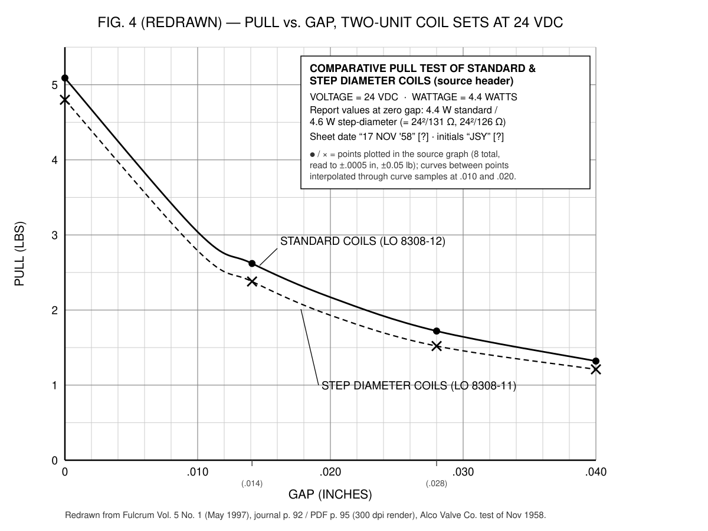

All quotations below are verbatim from the primary documents as reprinted in The Fulcrum. The Fulcrum was the journal of the University of Science and Philosophy (USP). The relevant issues are Vol. 4 No. 3 (October 1996) and Vol. 5 No. 1 (May 1997). The Sources appendix lists the full transcripts, the page images, and the provenance. The journal never reprinted two letters in the exchange. Those letters remain gaps in the record, and markers show where they fall.
In November 1958, the president of a St. Louis valve company packed two pairs of electromagnetic coils into a box. He shipped the box to a marble palace on a Virginia mountaintop.
The palace was Swannanoa, home of the University of Science and Philosophy. The addressee was Dr. Walter Russell: sculptor, self-taught cosmologist, and author of The Universal One and the Home Study Course. Russell died in 1963. In the decades since, he became the patron saint of a wide alternative-science movement. That movement today runs from Reddit's r/holofractal to Terrence Howard's appearances on The Joe Rogan Experience.
The sender was John E. Dube, president of the Alco Valve Company. A one-page letter and an engineering report came in the box with the coils. The report said that Russell's coil design did not work.
What happened next is the most scientifically interesting episode in the entire Russell corpus. The reason is not what the coils did. The reason is what the people did. Russell made a quantified prediction on the record. A competent, sympathetic outsider ran a controlled test. The result contradicted the prediction. Three days later, Russell replied and conceded — in plain words, on paper, "as a fact of law."
Nearly four decades later, the movement's own journal printed the whole file. The editor's stated purpose was to help "set the record straight." Then the file effectively vanished again. Scans without an OCR layer held it, and no search engine could read them. This essay reassembles it.
Act 1 — The Test
The engineer
John E. Dube (d. 1983) was not a hobbyist. Independent records establish his credentials. These records are patent registers and engineering-society archives, not Russell-movement sources. They show three things:
- Dube was an inventor on roughly 15–21 U.S. patents assigned to the Alco Valve Company, filed 1941–1960 and granted 1946–1964. The patents cover three-way valves, pressure regulators, and solenoid valves.
- Dube was president of Alco Valve, a St. Louis manufacturer of refrigeration and solenoid controls founded in 1925. Emerson Electric later absorbed the company, which today is part of Copeland.
- Dube was national president of ASHRAE, the American Society of Heating, Refrigerating and Air-Conditioning Engineers, for 1964–65. This detail should stop any "the test was incompetent" argument.
A 1958 issue of Refrigeration Engineering independently corroborates his title, "John E. Dube, president," in the very year of the test. Solenoid coils were, quite literally, this man's business.
The money
Every letter in the file names a third man: Mr. Russell Maguire of Greenwich, Conn. Four letters carry him as the copy line, and the November 24 letter addresses him directly. The name, town, era, and means almost certainly identify Russell Maguire (1897–1966), a Wall Street financier. Maguire owned the Auto-Ordnance Corporation, maker of the Thompson submachine gun. He also bought and published The American Mercury from 1952 to 1961.
Russell addressed his post-test letter to Maguire, not to Dube. The letter thanks Maguire "for making this second step toward the accomplishment of our epochal goal." That is the language of a report to a patron.
The reader must note one caution. Only Fulcrum's reprinted correspondence documents the Maguire–Russell funding link. No outside source — not the Library of Congress authority record, not the Auto-Ordnance or American Mercury literature — connects Maguire to Walter Russell. The same is true of the test itself: no trace of it, or of drawings L08308-11/-12, exists anywhere outside Fulcrum. Both principals are real, and the descriptions are correct. But the episode survives on the movement's own testimony alone.
The protocol
The exchange opens on August 25, 1958. Dube writes to Russell in the careful, collaborative tone of an engineer who wants a fair test. The Russell coil "has no through center cavity," so no one can compare it directly against a production solenoid valve. Dube therefore proposes purpose-built pull-test fixtures for both designs. He specifies the control:
"This core will have the same length and cross section area as the Russell core, and the two coils will be wound with the identical amount of wire of the same size." (Fulcrum V5N1, journal p. 84)
He also specifies the criterion, agreed in advance:
"The relative pulling capability of the two units should determine the merits of the Russell Theory." (Fulcrum V5N1, journal p. 84)
He asks Russell to approve the plan before anyone cuts metal: "Please let me know if you are in accord with this outline so we may proceed with the actual fabrication of the parts." (Fulcrum V5N1, journal p. 84)
(Gap in the record: Dube's letter replies to Russell's coil "description dated August 8th." Neither issue reprinted that description, and it is lost to us.)
Russell's reply of August 30 is warm, engaged, and full of his cosmology. One example: "The Russell coil is built upon Nature's tornado principle of power multiplication" (Fulcrum V5N1, j86). But the letter also does something a motivated reader should note: Russell blesses the protocol. "It would not be a waste of money, or time, to carry out your plan just as outlined, so long as not too much expectation is looked for." (Fulcrum V5N1, j85) He requests one design change — a through-hole, for future transmutation work. Dube's shop drafts a revision. In early October, Russell accepts the revised drawings without the hole: "We did not want the hole for this test anyhow." (Fulcrum V5N1, j87)
(Second gap: neither issue reprinted Dube's letter "of the 3rd inst." — October 3, 1958 — which transmitted the revised drawings.)
How fair was the build? The engineering report answers with numbers. The report says the windings were "calculated to use the same total length of copper wire per unit." As built, the Russell coil pair measured 126 Ω against the conventional pair's 131 Ω. The report discloses this deviation rather than hides it:
"The sum of the resistances of the segments of the Russell coil actually came out to be 4% less than the conventional coil. This small difference is less than the deviation we allow in production of conventional coils so is considered acceptable. The difference favors the Russell coil, so is not detrimental in this evaluation." (Fulcrum V4N3, journal p. 18)
The bias in the apparatus, in other words, ran toward Russell's claim.
There is a second mark of good practice. Alco's first test dropped iron filings into a gap between energized coils and weighed the mass that held. It showed "no apparent difference," but the engineers discarded the result anyway, because "the operator could vary the supporting power by packing the filings around the buttons" (Fulcrum V4N3, j18). They noticed that their own instrument was operator-sensitive. They flagged the problem in writing and switched to a force scale. Honest measurement operates this way: the confound they abandoned produced a result unfavorable to nobody.
Act 2 — The Prediction and the Verdict
One fact elevates this from an anecdote to a genuine scientific arc: Russell pre-registered a number. On October 5, 1958, before fabrication was complete, he wrote to Dube on USP letterhead, over his and Lao's signatures:
"My intuitive mathematics are often very near being right. Applying that method to the design now under way I venture to predict a 40% to 60% increase in gravity power of the Russell coils over the pair of conventional ones, as you are now making them. … It will be interesting to see how near our prophesy [sic] comes true." (Fulcrum V5N1, journal p. 87)
The prediction was forty to sixty percent. It was on the record, in advance, against a protocol that Russell approved.
The test ran in November at 24 volts DC. Alco's Fig. 4 is a hand-plotted graph on fine graph paper, reprinted in V5N1 at journal p. 92. It shows breakaway pull force versus gap for both coil types, at four gaps from zero to 0.040 inches. The conventional coils out-pull the Russell "step diameter" coils at every gap. The pull is about 5.1 lb versus 4.8 lb at contact. It decreases to 1.32 lb versus 1.21 lb at the widest gap plotted.
The readings are gridline-calibrated from the 300 dpi scan, with an uncertainty of ±0.05 lb. See schematics/README_schematics.md for the full extraction. The measured ratios run 6–13% in the conventional coil's favor, consistent with the report's "5 to 10%" within reading uncertainty. At zero gap, the conventional solenoid also drew slightly less power — 4.4 watts against the Russell coil's 4.6. Thus the Russell design lost on output and on input.

The report's verdict, verbatim and in full:
"[RE]SULTS:
The attached Fig. 4 is a plot of the pulling power of each type coil against the gap. The conventional coil has 5 to 10% more pulling power throughout the range of gaps tested.
[CO]NCLUSIONS:
(1) The slight inferiority of pulling power of the Russell solenoid can be accounted for by conventional theory. Since both type coils had the same length of copper wire in the windings, and since the average diameter of the Russell coil was slightly larger (due to the irregular core shape and loss of space between the segments of the winding) the Russell coil has slightly fewer turns, and this generates fewer ampere-turns of magnetic power, when operated at the same amperage and wattage as conventional designs.
(2) Since the Russell design inherently loses winding space it would appear to be inferior rather than superior to conventional design.
(3) Even if some new winding technique were developed to overcome the space loss in the Russell coil, it would appear that it would equal but not exceed conventional designs." (Fulcrum V4N3, journal p. 19)
(A cross-check confirms the internal consistency of the file. The measured set resistances reproduce the reported wattages exactly: 24²/131 Ω = 4.40 W for the conventional pair, and 24²/126 Ω = 4.57 W for the Russell pair. These values match the report's 4.4 and 4.6 watts. The numbers on Alco's separate sheets agree with each other. A genuine, unmassaged data set has this property.)
Dube's cover letter of November 21 delivered the verdict in a single sentence. It then did something few debunkers ever bother to do:
"Attached find report of comparison tests between a Russell and an orthodox solenoid coil. You will note that we were unable to detect any advantage for the Russell coil.
Under separate cover we are sending you the two pairs of test coils to give you a personal opportunity to check our results." (Fulcrum V4N3, journal p. 17)

He returned the apparatus so that Russell could replicate the measurement himself. The prediction was +40 to +60 percent. The measurement was −5 to −10 percent, at every gap, on hardware biased four percent in the prediction's favor.
Act 3 — The Concession
Russell answered in three days. The letter of November 24, 1958, is from Walter and Lao Russell to Maguire, with a copy to Dube. This whole recovery exists to surface that document. Its fourth and fifth paragraphs earn dignity, and readers should give them that dignity. Walter Russell was then 87 years old. A clean experiment refuted a claim that he held for over thirty years. He looked at the data and accepted the result:
"Our assumption of that greater power was purely theoretical and unimportant. We can now see by this test that any two wire coils, wound in any way whatsoever, will give equal resultant field potential, providing that the various dimensions of each coil are equal. We can readily see that now, and can admit it as a fact of law, as you have proved it to be." (Fulcrum V4N3, journal p. 20)

We say this explicitly: this is the most scientifically respectable thing that Walter Russell ever wrote. Science asks people to update on evidence — publicly, in writing, against their own decades-old teaching, at the cost of their funding. Science rarely gets that response. Legions of coil-winders since 1958 never matched it. He also released his patron without complaint: "To you the resultant test was a failure and you undoubtedly judged it a failure because it did not do what we said it would do. For that reason we feel that you are fully justified in withdrawing from it." (V4N3, j20) As far as the record shows, Maguire never appears again.
Then, on the same pages, the letter performs its other famous act. It shows the anatomy of a motivated retreat, step by step, live on the page. Watch the sequence.
First, the company of martyrs. "Alexander Graham Bell encountered many such seeming mistakes which his backers and friends considered dead ends… He was reduced to apple and cheese diet for long periods because of them." And: "Charles Goodyear gave rubber to the world against ten times the resistance by a world which named him a fool, a cheat and a knave." (V4N3, j20)
Second, the goalposts move. The letter retroactively reclassifies the power claim of forty to sixty percent from seven weeks earlier: "Our mistake was in making an issue of an effect which in no way affected our objective… while our real objective is to produce a new wiring system in a coil whichwould [sic] control the construction of matter …" (V4N3, j20) By this account, the coil was never about pulling power. It was about transmutation, a claim that the pull test cannot touch.
Third, the letter summons the unfalsifiable past. "Perhaps the next step is to reconstruct the mechanical system which one of us produced long ago in Westinghouse Laboratories, which made it possible to change six cubic centimeters of water into seventeen other 'substances'." (V4N3, j21) The letter offers the 1927 Westinghouse story as collateral for the next advance. But even the sympathetic 1996 editor relays a problem. A scientist who worked as Russell's own assistant in the 1950s "tried to reduplicate the 1927 work and failed at that time to do it" (V4N3, j23).
Fourth, the stakes inflate to the planetary. The letter says the knowledge behind the coil, properly funded, "most important of all, will immunize any nation from being hurt by any approaching missile, bomb, submarine, warship or plane." (V4N3, j21) In the same passage, the Russells reverse their storied secrecy: "the great secrecy which we thought necessary was not at all necessar[y] for we could actually give this coil to anyone and tell him that it held the world's greatest secret and he would not know how to use it." (V4N3, j21)
And finally, the postscript.
"P. S. Please ask Mr. Dube to return our original papers for posterity, and take copies in place of them for his records." (Fulcrum V4N3, journal p. 22)
The originals went home to Swannanoa, "for posterity." None of this is unusual. It is the ordinary human immune response to disconfirmation, and Festinger had already documented the pattern in other believers two years earlier, in When Prophecy Fails (1956). The unusual part is the location: it sits in the same three-page letter as an unreserved concession "as a fact of law." Both Russells are on that page: the one who could look at data, and the one who could not stop.
The Collision
The dates are the point, so here are the dates.
On November 24, 1958, Walter and Lao Russell conceded in writing that the coil test showed no advantage. They wrote that they "can admit it as a fact of law, as you have proved it to be."
The movement's own account adds a later event. Between the fall of 1959 and September 1961, per that account, Walter and Lao Russell told officers from NORAD that the coils had worked. The device in that account was the 1961 Optic Dynamo-Generator prototype — a different, later device, but built on the same power-multiplication coil doctrine the pull test had just falsified. USP's own archival lore preserves this account, and the movement's literature retells it. Proponents Grotz, Binder, and Kovac recounted the NORAD/Colorado Springs meetings at the 1992 Intersociety Energy Conversion Engineering Conference.
The concession predates the claim. The NORAD account is proponent-sourced and independently unverified. But it is the movement's own account. And it postdates, by ten months to nearly three years, the moment the movement's founder signed the opposite conclusion.
Sidebar — The Tesla Legend
A recurring pillar of the modern Russell revival is a story about Nikola Tesla. In the story, Tesla told Russell to seal his knowledge "for 1,000 years," because mankind was not ready. Terrence Howard promoted Russell's work at length on Rogan's show. The sealing story itself appears in the movement's own technical literature (Grotz, Binder & Kovac, IECEC 1992) and in countless YouTube treatments. The movement's own archive speaks on this subject, and its statement deserves a report. Fulcrum printed that statement too, in the very same 1996 issue as the Dube file.
The archived trace of the Russell–Tesla association consists, in total, of two letters. Russell and Dr. Royal Lee of Milwaukee exchanged them in 1954–55, about a reprinted Tesla book. Russell's letter is genuinely touching — "Nicola Tesla and I exchanged inspirations for many years. He was an artist at heart whom the world knew as a scientist- while I was a scientist at heart whom the world knew as an artist" (Fulcrum V4N3, journal p. 16). The letter contains not one word about burying, sealing, or withholding anything. The 1996 editor states the archive's holdings flatly:
"This letter from Walter Russell to Royal Lee is the only item in the archives that shows any trace of Walter Russell and Nikola Tesla's association. If there are any readers that know of any correspondence between these two great minds I would be grateful to receive a copy on behalf of USP." (Fulcrum V4N3, journal p. 16)
This is an open request from the keeper of the archive for any real Tesla correspondence. The archive had none. And Russell himself renounced the secrecy frame outright, in the November 24 concession letter. He wrote that the coil "would be as safe as pointing to the sun" in anyone's hands (V4N3, j21). The thousand-year seal has no documentary floor beneath it, by the movement's own published accounting.
Epilogue — The Burial
In 1996 the Fulcrum editor did something that deserves more credit than it ever received. He held the 1958 file inside the organization that Russell founded. He printed all of it: Dube's letter, the full engineering report, and Russell's response. He gave this rationale:
"I feel it is imperative to publish the test results that Walter Russell received after testing the viability of his contention in the Home Study Course unit 10 and in other writings that spiral wound coils produce a greater current flow and thus greater power. I know for a fact that many people have spent countless hours in attempting to construct spiral wound coils in hopes of getting greater power out of them as the HSC claims." (Fulcrum V4N3, journal p. 23)
He went further and urged that the concession "should be noted in future additons [sic] of the HSC," and then he reported an independent negative replication of a second Russell over-unity claim. That claim concerned the Unit 11 octave lens bank at the heart of the "Optic Dynamo-Generator" concept. An anonymous builder constructed it "and it was found to not produce any over unity of heat or light. In addition the placement of the lenses as detailed in the course will not allow the focal points to fall where the Russell's thought they would" (V4N3, j23). His bottom line was this: "the tests he had done proved that spiral wound coils do not produce greater power than straight wound coils and the publication of this data helps set the record straight and may assist future researchers." (V4N3, j23) The following spring, his successor issue finished the job. It published all nineteen of Alco's engineering pages so that "more exact knowledge of how these coils were constructed may help experimenters" (Fulcrum V5N1, journal p. 82).
Then the record vanished again, in two stages. For most of the next thirty years the file was simply offline. It sat in a 1996 print journal that nobody had put on the web. The Wayback Machine holds no capture of any Fulcrum PDF on philosophy.org before 2016, and none of V4N3 before 2022. When the issues did go up, they went up as image-only scans. The scans had no OCR layer and no text for any search engine to index. The missing text layer finished the job. For almost thirty years, a search for "Walter Russell coil test" found the Home Study Course claims, the NORAD story, and the Tesla legend. It could not find the one controlled test and its concession. To the searchable web, those pages were photographs of nothing.
In 2020, r/holofractal's thread on the Optic Dynamo-Generator collected some 140 comments of speculation about suppressed Russell energy technology. The suppression, it turns out, was decades offline followed by a scanner setting. By November 2025, the original philosophy.org URLs had gone dead. USP's rebuilt site still serves the scans, but through links to a contractor's personal SharePoint account. The scans stay image-only and stay invisible to search engines. Only one third-party archive holds complete copies: the Internet Archive Wayback captures of September 22, 2024. This project pulled the files from there and transcribed every document verbatim. It put the text where search engines and readers can finally reach it.
Close — What an Honest Reader Keeps
Remove everything contested. What remains is on paper, in the movement's own journal.
For about three months in the fall of 1958, Walter Russell participated in real science. The episode concluded in three days in November. The sequence was this:
- A qualified, fair-minded engineer designed a controlled comparison.
- Russell approved the protocol in advance.
- Russell committed a quantitative prediction to paper.
- The measurement result was the opposite of the prediction.
- The experimenter disclosed his confounds, returned the apparatus for an independent check, and put his conclusions in writing.
- Russell signed the concession — to his lasting credit, and unlike nearly everyone who invoked his name since.
The same letter immediately begins to rebuild the mythology. That does not erase the concession. It just makes the document human.
The skeptic keeps a clean kill: prediction, test, refutation, concession, all primary-sourced. The Russell-curious keep something too, and no one should take it from them. Their founder, faced with data, behaved better than his modern legend does.
And now anyone can check. The full replication package is public in this repository, transcribed and redrawn. It contains:
- all nineteen reprinted engineering pages (core halves, sleeves, buttons, bobbins, coil assemblies, dimensions and materials),
- the winding specification (six sections of 500 turns of #30 Bondeze wire, two parallel groups of three in series, and 126 Ω as built against the conventional unit's 131 Ω), and
- the test procedure (24 VDC, breakaway pull versus gap).
The build is a weekend project: wind four coils and buy a spring scale. Anyone can rerun the test that settled this in 1958, at any time. That is the standard Dube set, and it is the right one.
Sources Appendix
Primary documents (verbatim transcripts in transcripts/)
| File | Document | Citation |
|---|---|---|
v4n3_p15_russell_lee_tesla.md | Royal Lee → W. Russell, Jan 6 1955; W. Russell → Royal Lee, Mar 20 1954; 1996 editor's note on the Tesla association | Fulcrum V4N3, journal pp. 15–16 |
v4n3_p17_dube_letter.md | John E. Dube → W. Russell, cover letter for test report, Nov 21 1958 (CC R. Maguire) | Fulcrum V4N3, journal p. 17 |
v4n3_p18_evaluation_report.md | "Report on Evaluation of Russell Coil," Alco Valve Co. (unsigned enclosure) | Fulcrum V4N3, journal pp. 18–19 |
v4n3_p20_russell_response.md | Walter & Lao Russell → Russell Maguire (CC Dube), the concession letter, Nov 24 1958 | Fulcrum V4N3, journal pp. 20–22 |
v4n3_p23_editor_note.md | 1996 editor's note: rationale for publication; HSC Unit-11 lens-bank negative result | Fulcrum V4N3, journal p. 23 |
v5n1_p82_from_the_archives_intro.md | 1997 editor's intro to the drawings set (Binder) | Fulcrum V5N1, journal p. 82 |
v5n1_p83_dube_to_walter_russell_1958-08-25.md | Dube → W. Russell, test-protocol proposal, Aug 25 1958 | Fulcrum V5N1, journal pp. 83–84 |
v5n1_p85_russells_to_dube_1958-08-30.md | Russells → Dube, reply approving plan with reservations, Aug 30 1958 | Fulcrum V5N1, journal pp. 85–86 |
v5n1_p87_russells_to_dube_1958-10-05.md | Russells → Dube, the 40–60% prediction letter, Oct 5 1958 | Fulcrum V5N1, journal p. 87 |
v5n1_drawings_description.md | Descriptions of all 19 reprinted engineering pages: Figs. 1–4 (incl. the Fig. 4 pull-test graph) and drawings LO 8308-11/-12, -101…-109 and -120…-122 | Fulcrum V5N1, journal pp. 88–106 |
INDEX_v4n3.md, INDEX_v5n1.md | Document maps, page concordances (journal p. N = PDF p. N+3 in both issues), and cross-issue flags | — |
Page images: sources/v4n3_renders/ and sources/v5n1_renders/ (all 19 drawing pages, V5N1 PDF pp. 91–109, rendered at 300 dpi). Redrawn vector schematics: schematics/.
Known gaps (documents cited in the exchange but never reprinted)
- Walter Russell's coil description, dated August 8, 1958 — the document Dube's Aug 25 protocol letter responds to. Neither V4N3 nor V5N1 reprinted it. It survives, if at all, presumably in USP's private archives.
- John E. Dube's letter of October 3, 1958 — transmitted the revised test-unit drawings (LO 8308-11/-12, dated Oct 2 1958). The Russells' Oct 5 reply acknowledges it. Neither issue reprinted it.
Provenance of the source scans
- This project recovered both issues from Internet Archive Wayback Machine captures of philosophy.org, capture timestamp 20240922235101 (September 22, 2024). The files are
sources/fulcrum_v4n3_october_1996.pdf(53 pp.) andfulcrum_v5n1_may_1997.pdf(138 pp.). Both are image-only scans with no OCR text layer. - The original philosophy.org
/uploads/URLs have returned 404 at least since 7 November 2025 (last observed live 5 August 2025). But USP's rebuilt site stays live. It serves complete PDFs through per-issue "DOWNLOAD ATTACHMENT" links on a contractor's personal SharePoint account (netorg242520-my.sharepoint.com). On 2026-09-09 this project verified the SharePoint copy of V4N3 as byte-identical (SHA2564ff27b21…) to the Wayback capture. - Other captures and copies exist. A 2022 Common Crawl Wayback fetch of V4N3 is truncated at 1 MiB and unusable. Common Crawl refetched both issues on 2025-08-05. Those captures are capped near 5 MiB and are likewise incomplete. Scribd re-uploads of V4N3 exist (completeness unverified). The 20240922235101 Wayback captures are the only complete copies that a third-party archive holds. USP itself distributes every other known complete copy. The SharePoint host is a personal account and could vanish without notice.
Context verification (secondary, independent of Fulcrum)
verification/maguire-dube-verification.md — Russell Maguire (1897–1966, LC Name Authority n97085811): Auto-Ordnance/Thompson owner, American Mercury publisher 1952–61, Greenwich, Conn. John E. Dube (d. 1983): ~15–21 Alco Valve patents, filed 1941–1960 and granted 1946–1964 (Google Patents), Alco Valve president (title corroborated in Refrigeration Engineering v.66, 1958), ASHRAE national president 1964–65. Negative findings: no trace of the Maguire–Russell funding link, the Alco test, or drawings L08308-11/-12 exists in any source independent of Fulcrum. The fall 1959 – Sept 1961 NORAD/Colorado Springs account (Grotz/Binder/Kovac, IECEC 1992) is proponent-sourced and independently unverified.